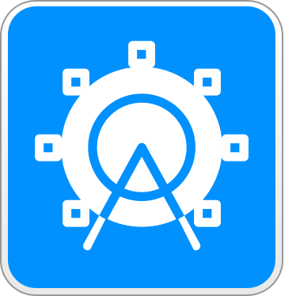
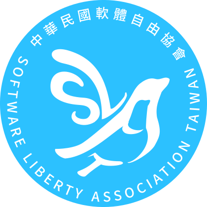
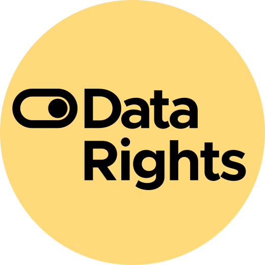

Je telefoon is straks niet meer van jou.
Vanaf september 2026 zal Google zonder toestemming een stille update uitrollen die elke Android-app blokkeert waarvan de ontwikkelaar zich niet bij Google heeft geregistreerd, een contract heeft getekend, Google heeft betaald én een identiteitsbewijs heeft afgegeven.
Dat geldt voor iedere app op ieder apparaat, wereldwijd, zonder dat je dit kunt voorkomen.
↓Wat Google van plan is
In augustus 2025 kondigde Google een nieuwe verplichting aan: vanaf september 2026 moet iedere Android-app-ontwikkelaar zich centraal registreren bij Google voordat hun software op enig apparaat geïnstalleerd kan worden. Niet alleen Play Store-apps: álle apps. Dit geldt ook voor apps die tussen vrienden gedeeld worden, die via F-Droid verspreid worden, of die door hobbyisten voor eigen gebruik gebouwd worden. Onafhankelijke ontwikkelaars, kerk- en gemeenschapsgroepen en hobbyisten worden allemaal buitengesloten van het ontwikkelen en verspreiden van hun software.
Voor registratie is het volgende vereist:
- Een vergoeding aan Google betalen
- Akkoord gaan met de algemene voorwaarden van Google
- Je identiteitsbewijs overhandigen
- Bewijs leveren van je privé-ondertekeningssleutel
- Alle huidige en toekomstige applicatie-identificatiecodes opsommen
Als een ontwikkelaar zich er niet aan houdt, worden zijn apps stilletjes geblokkeerd op elk Android-apparaat overal ter wereld.
Wie hier de dupe van wordt
Jij
Je hebt een Android-telefoon gekocht omdat Google je vertelde dat hij open was. Je kon installeren wat je wilde, en dat was de afspraak.
Google herschrijft die afspraak nu, met terugwerkende kracht, op hardware die jij al bezit. Na de update kun je alleen nog software draaien die Google vooraf heeft goedgekeurd. Op jouw telefoon: jouw eigendom, waarvoor jij hebt betaald.
Onafhankelijke ontwikkelaars
De eerste app van een tiener, een privacytool van een vrijwilliger, of een vertrouwelijke interne bèta van een bedrijf. Het maakt niet uit. Na september 2026 kan geen daarvan geïnstalleerd worden zonder Googles zegen.
F-Droid, thuisbasis van duizenden vrije en open-source Android-apps, heeft dit een "existentiële" bedreiging genoemd. Cory Doctorow noemt het "Darth Android".
Overheden en maatschappelijk middenveld
Google heeft een gedocumenteerde staat van dienst in het meewerken wanneer autoritaire regimes om het verwijderen van apps vragen. Met dit programma bestaat de software die de instituties van je land draait bij de gratie van één enkele, niet ter verantwoording te roepen buitenlandse onderneming.
De EFF noemt app-gatekeeping "een steeds verder uitdijende route naar internetcensuur."
Googles "nooduitgang" is een valluik
Google zegt dat "power users" niet-geverifieerde apps "alsnog kunnen installeren". Zo ziet dat er daadwerkelijk uit:
- Ga naar de systeeminstellingen en zoek de Ontwikkelaarsopties op
- Tik zeven keer op het buildnummer om de ontwikkelaarsmodus te activeren
- Klik de schrikschermen over dwang weg
- Voer je pincode in
- Start het apparaat opnieuw op
- Wacht 24 uur
- Kom terug, klik nog meer schrikschermen weg
- Kies "tijdelijk toestaan" (7 dagen) of "onbeperkt toestaan"
- Bevestig, nogmaals, dat je "de risico's" begrijpt
Negen stappen. Een verplichte bedenktijd van 24 uur. Om software te installeren op een apparaat dat je bezit.
Erger nog: dit proces loopt volledig via Google Play-services, niet via het Android-besturingssysteem. Google kan het op elk moment wijzigen, aanscherpen of stopzetten, zonder dat daar een OS-update of toestemming voor nodig is. En tot op heden is het in geen enkele bèta-, preview- of canary-build uitgebracht. Het bestaat alleen als een blogpost en wat mockups.
Dit gaat verder dan alleen Android
Als Google met terugwerkende kracht miljarden apparaten kan dichttimmeren die als open platformen verkocht zijn, kijkt elke hardwarefabrikant op de planeet goed mee.
Het principe dat hier wordt gevestigd: het bedrijf dat jouw apparaat heeft gemaakt mag, nadat je het hebt gekocht, beslissen welke software je mag draaien. In software heet dit een "rug pull"; maar daar kon je tenminste nog concurrerende software installeren. In hardware is het een fait accompli dat je je handelingsvrijheid ontneemt en je machteloos maakt tegenover de grillen van één enkele, niet ter verantwoording te roepen gatekeeper en veroordeelde monopolist.
Androids openheid was nooit slechts een functie. Het was de belofte die het onderscheidde van de iPhone. Miljoenen kozen voor Android om precies die reden. Google trekt die belofte nu eenzijdig in, op apparaten die al in de zakken van mensen zitten, omdat ze hebben besloten dat ze genoeg marktdominantie en regulatory capture hebben om er mee weg te komen.
Ars Technica: "Googles jaloezie op Apple dreigt de open erfenis van Android te ontmantelen."
Maar wacht, is dit niet...
"...gewoon een kwestie van veiligheid?"
Het veiligheidsargument is een rookgordijn. Google Play Protect scant al op malware, onafhankelijk van de identiteit van de ontwikkelaar. Een identiteitsbewijs eisen maakt de code niet veiliger. Het maakt ontwikkelaars identificeerbaar en controleerbaar. Malware-auteurs kunnen zich gewoon registreren. Indie-ontwikkelaars en dissidenten vaak niet. De EFF is duidelijk: identiteitsgebaseerde gatekeeping is een censuurinstrument, geen beveiligingsinstrument.
"...nog steeds sideloaden als je de uitgebreide procedure gebruikt?"
Negen stappen, 24 uur wachten, verstopt in de Ontwikkelaarsopties, geleverd via een propriëtaire dienst die Google op elk moment kan intrekken. Dat is geen sideloading. Dat is een afschrikkingsmechanisme, gebouwd om ervoor te zorgen dat bijna niemand het doorloopt. En omdat het via Play-services loopt in plaats van via het OS, kan Google het stilletjes aanscherpen of stopzetten.
"...alleen een probleem als je iets te verbergen hebt?"
Klokkenluiders, journalisten en activisten onder autoritaire regeringen zullen de eerste slachtoffers zijn. Daarna mensen in situaties van huiselijk geweld. Al deze groepen hebben legitieme redenen om software te verspreiden of te gebruiken zonder hun juridische identiteit in een database van Google achter te laten. Anonieme open-source bijdragen zijn een traditie die ouder is dan Google zelf. Dit beleid maakt daar op Android een einde aan.
"...hetzelfde wat Apple doet?"
Apple is vanaf dag één een walled garden geweest. Mensen kozen voor Android omdat het anders was. "Apple doet het ook" is een race naar de bodem en een zwak tu quoque-argument. En onder regelgevingsdruk (de Digital Markets Act van de EU) wordt zelfs Apple gedwongen zich open te stellen. Google beweegt in de tegenovergestelde richting: het probeert zijn gatekeeper-status verder te verankeren.
"...gewoon 25 dollar en wat papierwerk?"
Misschien, als je een ontwikkelaar in de VS bent met een creditcard en een rijbewijs. Probeer eens een student in sub-Sahara-Afrika te zijn, of een dissident in Myanmar, of een vrijwilliger die een gezondheidsapp voor de gemeenschap onderhoudt. De kosten zijn niet alleen financieel: je levert je identiteitsbewijs en het bewijs van je ondertekeningssleutels in bij een bedrijf dat routinematig meewerkt aan overheidsverzoeken om apps te verwijderen en ontwikkelaars te ontmaskeren.
Verzet je
Iedereen
- Installeer F-Droid op elk Android-apparaat dat je bezit. Alternatieve stores overleven alleen als mensen ze ook daadwerkelijk gebruiken.
- Neem contact op met de toezichthouders. Toezichthouders wereldwijd maken zich oprecht zorgen over monopolies en de machtsconcentratie in de tech-sector, en willen rechtstreeks van geraakte en bezorgde mensen horen.
- Deel deze pagina. Link overal naar keepandroidopen.org.
- Spreek astroturfers tegen. De "ja maar eigenlijk..."-fractie is volop aanwezig. Laat hen het verhaal niet bepalen.
- Onderteken de petitie op change.org en sluit je aan bij de meer dan 100.000 ondertekenaars die hun stem hebben laten horen.
- Lees en deel onze open brief
- Vertel Google wat je hiervan vindt via hun eigen enquête over ontwikkelaarsverificatie (voor zover dat iets uithaalt).
Ontwikkelaars
Meld je niet aan. Doe niet mee aan het programma door je in te schrijven bij de Android Developer Console en akkoord te gaan met hun onherroepelijke algemene voorwaarden. Verifieer je identiteit niet. Doe niet mee.
Het plan van Google werkt alleen als ontwikkelaars meewerken. Doe dat niet.
- Praat andere ontwikkelaars en organisaties uit hun aanmelding.
- Voeg de FreeDroidWarn-bibliotheek toe aan je apps om gebruikers te waarschuwen.
- Heb je een website? Voeg de countdownbanner toe.
Google-werknemers
Als je iets weet over de technische uitvoering of de interne overwegingen van het programma, neem dan vanaf een niet-werk-machine en een niet-Gmail-account contact op met tips@keepandroidopen.org. Strikte vertrouwelijkheid gegarandeerd.
Allen die zich verzetten…
71 organisaties uit 23 landen hebben de open brief ondertekend
 VideoLAN videolan.org
VideoLAN videolan.org  The European Consumer Organisation (BEUC) beuc.eu OW2 ow2.org Tuta Mail tuta.com The Calyx Institute calyx.org /e/ Foundation e.foundation Digitale Gesellschaft digitale-gesellschaft.ch AdGuard adguard.com XMPP Standards Foundation xmpp.org The Tor Project torproject.org The Guardian Project guardianproject.info Fundación Karisma karisma.org.co Obtainium obtainium.imranr.dev ARTICLE 19 article19.org Forbrukerrådet forbrukerradet.no
The European Consumer Organisation (BEUC) beuc.eu OW2 ow2.org Tuta Mail tuta.com The Calyx Institute calyx.org /e/ Foundation e.foundation Digitale Gesellschaft digitale-gesellschaft.ch AdGuard adguard.com XMPP Standards Foundation xmpp.org The Tor Project torproject.org The Guardian Project guardianproject.info Fundación Karisma karisma.org.co Obtainium obtainium.imranr.dev ARTICLE 19 article19.org Forbrukerrådet forbrukerradet.no  The OpenStreetMap Foundation (OSMF) osmfoundation.org The Center for Digital Progress (D64) d-64.org Aurora Store auroraoss.com European Digital Rights (EDRi) edri.org Open Rights Group (ORG) openrightsgroup.org
The OpenStreetMap Foundation (OSMF) osmfoundation.org The Center for Digital Progress (D64) d-64.org Aurora Store auroraoss.com European Digital Rights (EDRi) edri.org Open Rights Group (ORG) openrightsgroup.org 
The App Fair Project appfair.org Molly molly.im Cryptee crypt.ee iodé iode.tech epicenter.works – for digital rights epicenter.works Digital Rights Watch digitalrightswatch.org.au IzzyOnDroid izzyondroid.org Fedimedia fedimedia.it Proton AG proton.me Rossmann Group rossmanngroup.com Privacy Guides privacyguides.org GitHub Store github-store.org FOSDEM fosdem.org The Free Software Foundation Europe (FSFE) fsfe.org Rocky Linux rockylinux.org Italian Linux Society ils.org JMP.chat jmp.chat microG microg.org Nextcloud nextcloud.com Associação Nacional para o Software Livre (ANSOL) ansol.org Open Web Advocacy open-web-advocacy.org Fastmail fastmail.com F-Droid f-droid.org The Chaos Computer Club (CCC) ccc.de CryptPad cryptpad.org Ghostery ghostery.com The Free Software Foundation (FSF) fsf.org KDE e.V. kde.org April april.org GrapheneOS Foundation grapheneos.org Osservatorio Nessuno OdV osservatorionessuno.org
KDE e.V. kde.org April april.org GrapheneOS Foundation grapheneos.org Osservatorio Nessuno OdV osservatorionessuno.org 
Software Liberty Association of Taiwan slat.org.tw
Data Rights datarights.ngo GNOME Foundation gnome.org LineageOS lineageos.org Brave brave.com The Electronic Frontier Foundation (EFF) eff.org La Quadrature du Net laquadrature.net Vivaldi Technologies AS vivaldi.com Technopolice Bruxelles technopolice.be Software Freedom Conservancy sfconservancy.org GNU/Linux València gnulinuxvalencia.org The Digital Rights Foundation digitalrightsfoundation.pk FUTO futo.org MetaBrainz Foundation metabrainz.org FACiL facil.qc.ca Codeberg e.V. codeberg.org OpenMedia openmedia.org Techlore techlore.techWat anderen erover zeggen
Vakpers
"Keep Android Open"
Linux Magazine
"Open letter warns mandatory registration 'threatens innovation, competition, privacy and user freedom'"
Infosecurity Magazine
"Google's dev registration plan 'will end the F-Droid project'"
The Register
"Google will verify Android developers distributing apps outside the Play store"
The Verge
"Google's Android developer verification program draws pushback"
InfoWorld
"Google's developer registration 'decree' means the end for alternative app stores"
Cybernews
"It effectively makes the Play Store a monopoly without actually mandating that it is a monopoly."
I-Programmer
"I've been an Android user for almost 15 years -- and Google's sideloading changes are pushing me back to iPhone"
Tom's Guide
"Google says it's making Android sideloading 'high-friction' to better warn users about potential risks"
XDA Developers
"Google's Attack on Sideloading Will Rob Android of One of Its Best Features"
How-To Geek
"Google will make you wait 24 hours to sideload Android apps"
How-To Geek
"F-Droid Says Google Is Lying About the Future of Sideloading on Android"
How-To Geek
"We all know that's a load of bullshit. Adding a goddamn 24-hour waiting period is batshit insanity."
Thom Holwerda, OSnews
"Open-Source Android Apps at Risk Under Google's New Decree"
TechRepublic
"F-Droid Says Google Is Lying About the Future of Sideloading on Android"
How-To Geek
"Android, Epic, and What's Really Behind Google's 'Existential' Threat to F-Droid"
Slashdot
"Open-Source Android Apps Threatened by Google's New Policy"
Datamation
"Android's sideloading limits are its most anti-consumer move yet"
MakeUseOf
"Google is restricting one of Android's most important features, and users are outraged"
SlashGear
"F-Droid project threatened by Google's new dev registration rules"
Bleeping Computer
"F-Droid says Google's new sideloading restrictions will kill the project"
Ars Technica
"Google's Apple envy threatens to dismantle Android's open legacy"
Ars Technica
"Google's new developer rules could threaten sideloading and F-Droid's future"
Gizmochina
"Google's new ID requirements could destroy independent app stores"
TechSpot
"Resistance to Google's Android verification grows among developers"
Techzine EU
"'Keep Android Open' Movement Challenges Google's Developer Verification Rule"
Open Source For U
"An 'existential' threat to alternative app stores"
The New Stack
"Over 67 groups urge the company to drop ID checks for apps distributed outside Play"
The Register
"Google's New Developer ID Rule Could Harm F-Droid"
Reclaim The Net
"Google's New Developer Rules Threaten to End the F-Droid Open-Source App Store"
How-To Geek
"Sideloading on Android? Soon It'll Be Like a TSA Check for Apps"
Android Headlines
"Android app store provider Aptoide hits Google with fresh lawsuit alleging monopoly and anticompetitive chokehold"
Benzinga
"Google's Attack on Sideloading Will Rob Android of One of Its Best Features"
How-To Geek
"Sideloading on Android? Soon It'll Be Like a TSA Check for Apps"
Android Headlines
"Google kneecaps indie Android devs, forces them to register"
The Register
"Google Clamps down On Android's Openness"
Internet Freedom Foundation (India)
"Sideloading is dead for all intents and purposes. The Android you know and love is slowly disappearing."
Android Police
"Google will require developer verification to install Android apps, including sideloading"
9to5Google
"Android Security or Vendor Lock-In? Google's New Sideloading Rules Smell Fishy"
It's FOSS News
"I've been an Android user for almost 15 years -- and Google's sideloading changes are pushing me back to iPhone"
Tom's Guide
"F-Droid Slams Google for Misleading Users About Android's App Verification"
Android Headlines
"Keep Android Open – Abwehr gegen Verbot anonymer Apps von Google"
heise online
"Google's Requirement For All Android Developers To Register And Be Verified Threatens To Close Down Open Source App Store F-Droid"
Techdirt
"This will wipe out Android as an actual alternative to Apple's mobile OS offerings."
Hackaday
"Google plans to block side-loading like Apple, declaring war on Android freedom"
Tuta Blog
"Google will require developer verification for Android apps outside the Play Store"
TechCrunch
Opiniestukken en analyses
"This policy represents a dramatic departure from Android's decades-old tradition of openness, in which developers could build and share apps freely without first submitting to a centralized authority."
Biometric Update
"Android does not just warn anymore. It enforces."
Youssef Mabrouk, Ostorlab
"Android is no longer the scrappy rebel. It's just another empire tightening the drawbridge."
Newsfangled
"Android wasn't supposed to be 'safe.' It was supposed to be free."
fireborn, mataroa.blog
"Google has announced that they are altering the deal. And telling us that we should pray that they don't alter it further. Block this policy change now before they wrap their cold metal hands around our necks."
Jesse Wilson, PublicObject.com
"The phone you bought and paid for is no longer really yours. Google decides which apps are allowed to be loaded on Android and which are not."
Tuta Blog
"What student is going to upload their passport to a trillion-dollar surveillance corporation just to share their weekend project?"
fireborn, mataroa.blog
"Google has not removed Android's openness, but it is turning openness from a default right into a conditional, attributable, and tiered capability."
MerchMindAI
"Google's story that this move is motivated by security is obviously bullshit. The idea that Google can improve Android's safety by certifying developers, rather than code, is obvious bullshit."
Cory Doctorow, Pluralistic
"Destroying F-Droid isn't some 'oops.' It's the mission. It's Google finally cutting the last remaining escape route and locking every single user inside their store."
fireborn, mataroa.blog
"Centralizing the registration of all applications worldwide gives Google newfound powers to completely disable any app it wants."
Mikhail Korotaev, Nextcloud Blog
"The proposed Android Developer Verification program isn't a security update; it's a kill switch for the open ecosystem."
Hillary Keverenge, Tech-ish Kenya
"Developers from sanctioned countries or those without Google Play access cannot verify themselves. This creates systemic discrimination against developers based on birthplace rather than conduct."
agnostic-apollo (Termux developer), GitHub
"Google's move is not credibly about 'security,' but actually about consolidating power and tightening control over a formerly open ecosystem."
Techdirt
"Google isn't certifying apps, they're certifying developers. This implies that the company can somehow predict whether a developer will do something malicious in the future."
Cory Doctorow, Pluralistic
"One US corporation is placing itself between every Android developer and every Android user on earth."
PixelUnion
"Sideloading, a longstanding pillar of Android's openness, is now being marginalized, placing the Android platform closer to the walled-garden approach of Apple's iOS."
Purism
"The requirement extends Google's gatekeeping authority from its own Play Store to every alternative distribution channel on Android."
LLM Advocates
"There is also the very real possibility that Google will leak your identity with the result that any apps with political implications could result in persecution and worse."
I-Programmer
"This is not about protecting users. This is about control. This is about Google cutting out the last remaining artery of independence in Android."
fireborn, mataroa.blog
"Google has announced what can only be described as a death blow to the open ecosystem that made Android. Under the guise of 'security,' Google is implementing draconian developer verification requirements."
AndroidSage
"Google's attempts to make Android 'more secure' are, in fact, increasing the risk for Android users. The more friction you introduce in the name of security, the more likely users will attempt to bypass security completely."
Ken Buckler, Enterprise Management Associates
"This is a form of malicious compliance with the court orders stemming from its losses to Epic Games."
Cory Doctorow, Pluralistic
"Although Google's claim is that this is for 'security', it does not prevent the regular practice of scammers buying up existing verified developer accounts."
Maya Posch, Hackaday
"Freedom of choice is being reframed as a 'security risk.'"
Newsfangled
"Every additional bureaucratic hurdle reduces diversity in the software ecosystem and concentrates power in large established players."
Mikhail Korotaev, Nextcloud Blog
"This is not a developer account sign-up. This is comprehensive surveillance of the software development ecosystem."
PixelUnion
"Innovation may be the biggest casualty in all of this. This new rule erodes your right to make informed decisions about your own devices."
MakeUseOf
"This could turn Google into the effective gatekeeper for all apps on certified Android devices."
It's FOSS News
"Once there is no such thing as 'sideloading', there's virtually no difference between iOS and Android. I see no reason to buy Android over iOS at this point."
Thom Holwerda, OSnews
"Android is not open anymore. It's not an alternative. It's not even trying. It's iOS with ads and spyware bolted on."
fireborn, mataroa.blog
"The $25 isn't the real cost. The chilling effect is. Submitting government ID to Google is a non-starter for pseudonymous contributors and privacy researchers."
Arafat Alim, DEV Community
"Google is turning sideloading from a right into a permission slip, and the open-source community has until September to convince it otherwise."
Reclaim The Net
Organisaties en open brieven
"The European Pirate Party called for proportionate and transparent measures that ensure security without restricting innovation, limiting anonymity, or distorting competition."
European Pirate Party
"Google's developer verification policy creates a centralized database, controlled by a single corporation, containing the real-world identity of every person who writes software for Android."
Brave
"This invasion of privacy of developers is not just an overreach of Google's authority over Android, but also jeopardizes developer safety."
Software Freedom Conservancy
"Centralised, intransparent security architectures certainly help secure monetization and the market by locking out competitors."
Nextcloud
"Unilaterally consolidating power to approve software into the hands of a single unaccountable corporation is a threat to digital sovereignty everywhere."
Nextcloud
"Google is turning Android into a walled garden monopoly. We must prevent it."
Osservatorio Nessuno
"Nearly 50 organizations published an open letter opposing what they characterize as a 'kill switch for the open ecosystem.'"
Tech-ish Kenya
"For developers building tools specifically designed to protect user privacy, being forced to surrender their own personal data as a precondition for distribution is deeply contradictory."
AdGuard
"This extends Google's gatekeeping authority beyond its own marketplace into distribution channels where it has no legitimate operational role."
Open letter, over 67 signatory organizations
"Remember: It's your phone, your data, your freedom. Don't let Google take it away."
Tuta
"Android's biggest strength has always been its openness. That's what attracted developers and users in the first place."
AdGuard
"Forcing software creators into a centralized registration scheme is as egregious as forcing writers and artists to register with a central authority."
F-Droid
"Your Smartphone, Their Rules: How App Stores Enable Corporate-Government Censorship."
ACLU
"If it were to be put into effect, the developer registration decree will end the F-Droid project and other free/open source app distribution sources as we know them today."
F-Droid
"Developers who choose not to use Google's services should not be forced to register with, and submit to the judgement of, Google."
Open letter, over 67 signatory organizations
"Verification just confirms who's behind the app, it doesn't guarantee clean code or rule out malicious behavior."
AdGuard
"When you set up a gate, you invite authorities to use it to block things they don't like. And when you build a database, you invite governments to try to get access."
Electronic Frontier Foundation
"Ultimately, Google's plan will stop you from owning your Android phone."
Tuta
"Google's abusive approach to the Android operating system has only gotten worse in recent years. Software freedom is sorely lacking in the 'computers in our pockets' we call cell phones."
Free Software Foundation
"Developers who build privacy-first browsers, encrypted messaging apps, VPNs, Tor-based software or tools for journalists and activists would be required to upload government ID to Google. These developers are unlikely to trust Google and might stop developing for Android."
Brave
"Independent software distribution on Android will now require Google's explicit permission."
AdGuard
"There are governments who might very much like to know the names of the developers of those applications so that they can go after them."
Electronic Frontier Foundation
"Changes would impose barriers to entry for individual developers, small teams and volunteer projects by imposing fees, identity checks and terms that may not align with the principles of an open ecosystem."
Infosecurity Magazine
"We unequivocally advise against signing up for this program, now or ever."
F-Droid Open Letter
"A policy that forces every Android developer to hand their identity to Google, regardless of whether they use Google's services, makes Android a less-open and less-private platform."
Brave
"MEP Christel Schaldemose formally questioned whether Google's mandatory central registration is compatible with the Digital Markets Act."
European Parliament
"While Android used to be praised for its freedom and independence, it will become a closed shop just like Apple."
Tuta
"This is a profound change, one that shatters the entire premise of the Android ecosystem, long regarded as the antithesis of the closed Apple ecosystem."
AdGuard
"Google Play itself has repeatedly hosted malware, proving that corporate gatekeeping doesn't guarantee user protection."
F-Droid
"A centralized global registration system for Android will inevitably chill this work. Those communities are likely to drop out of developing for Android altogether."
Electronic Frontier Foundation
"Google will cut off independent developers to Android if they do not register with Google first. This will kill independent platforms like F-Droid and severely impede FLOSS devs from creating apps for Android."
KDE
"We are running out of time until Google becomes the gate-keeper of all users devices."
F-Droid
YouTubers en makers
"If I'm going to be trapped in a walled garden anyway, I'll take the one that's built properly."
fireborn – Blog
"Google is setting a requirement that only they can fulfill, forcing developers to go through Google and killing off thousands of apps. Countless users stranded."
Techlore – YouTube
"Google already can disable malware that they find on your device. It's already a built-in feature. So what is developer registration actually adding here? Is it security or control? You decide."
Techlore – YouTube
"Google isn't testing this in the US or Europe first. They're starting in countries like Brazil, Indonesia, Singapore, and Thailand. Why? Because these are massive growth markets where regulation is weaker. By the time regulators catch up, the damage will already be done."
ChiefGyk3D – YouTube
"Google decides what's safe for you, and you don't get a say."
fireborn – Blog
"Imagine Dell told you that you could no longer install any operating system other than Windows on your laptop. That's what Google is doing to your phone."
SomeOrdinaryGamers (Mutahar) – YouTube
"Android has become what they set out to destroy."
Linus Sebastian, LMG Clips – YouTube
"This is an iPhone now. I didn't want to buy an iPhone. I use Android because it gives me freedom. If you are not going to give me freedom with my computer, then why would I buy your stuff anymore?"
Louis Rossmann – YouTube
"That's not openness. That is control."
ChiefGyk3D – YouTube
"This represents the last real safe place for free and open-source software in the entire mobile ecosystem. Once it's gone, it's gone. And we're going to spend the next decade trying to claw it back."
Techlore – YouTube
"A world where two tech companies from the same city that dominate all of our mobile devices both require centralized developer registration is a world with one more lever for surveillance, one more checkpoint for censorship."
Techlore – YouTube
"Follow the money. Google makes money when apps are downloaded from its store. Google has completely forgotten about its earlier company motto: Don't be evil."
Tuta Blog – Blog
"When you download applications, you've simply installed an application. I don't want to use words like 'sideload.'"
SomeOrdinaryGamers (Mutahar) – YouTube
"The widely-circulated narrative that Google already backed down from this is false. They didn't, and that misunderstanding may be the most dangerous part of the story right now."
Techlore – YouTube
"Your device, their rules. The phone you bought and paid for is no longer really yours."
Tuta Blog – Blog
"Every single time a company takes away your ability to do what you want with what you bought and paid for, every single time they twist a knife, we have to point it out."
Louis Rossmann – YouTube
"The fact of the matter is, this is my device. I paid a lot of money for it. I should be able to do with it what I want."
Switched to Linux – YouTube
"F-Droid is basically saying that the new Google developer registration process will likely kill the open-source app store entirely."
The Linux Experiment – YouTube
"Google has been carefully watching from the sidelines to see what exactly it is that Apple can get away with."
Linus Sebastian, LMG Clips – YouTube
"Google keeps getting in as much trouble as Apple when Google is half evil and Apple is full evil. So there are probably people inside Google saying, 'Why not just go full evil?'"
Louis Rossmann – YouTube
"This has obvious problems for non-Google operating systems like iodeOS, LineageOS, or BraxOS. Google Android will 'check in' with Google to verify the identity of the app and to validate the operating system."
Rob Braxman Tech – Locals
"I have really no more strong reason to not recommend you all get iPhones, because this just is pretty much an iPhone with a Google logo on it at this point."
Techlore – YouTube
"I'm not using the word 'phone.' I'm using the word 'computer.' This has over 8 GB of RAM, a terabyte of storage. It's a computer. And I'm also not going to be using words like 'sideload.' When you download an exe file onto your Windows computer, you've installed an application. You haven't 'sideloaded' something."
Louis Rossmann – YouTube
"This means you can't sideload an app from an unofficial source. But it could also be used to lock the ecosystem so we're forced to install only Google apps on approved Google OS versions."
Rob Braxman Tech – Locals
"Google is doing to Android what Microsoft once tried to do to the web. Embrace, extend, extinguish. Just wrapped in a shinier open-source package."
ChiefGyk3D – YouTube
"Developers of privacy-focused tools and emulators will have to dox themselves, making them vulnerable to government agencies or legal action."
SomeOrdinaryGamers (Mutahar) – YouTube
"Google is removing the one key advantage Android has over iOS."
SomeOrdinaryGamers (Mutahar) – YouTube
Ontwikkelaars en gemeenschap
"It took them 17 years to finally pull the cage all the way shut."
Apocryphon, Hacker News
"I want to deploy apps on my device. They are my apps, it's my device, and I should not be required to ask for permission to do so."
fsniper, Hacker News
"Signal, VPNs -- they'll have a list of everyone opting out of government-mandated backdoors."
Max-P, Lemmy
"My Pixel 6 just broke, and after 15 years of using Android, I've finally been convinced to move to iOS. If I must live in a walled garden, I suppose I'll choose the one with nicer flowers."
yonato, Hacker News
"Software gatekeeping is a threat to human rights. Just recently an app to track ICE was banned from the iOS app store even though this should clearly be protected first amendment speech."
gthing, Reddit
"Don't beg. Don't get in a position that freedoms depend on the whims of a corporation or willingness of a government to regulate them. Build."
jzb, Lobsters
"Google seems to actively hate people who develop for their platforms."
hbn, Hacker News
"Android is for everyone, provided they submit to Google exclusively."
gumby271, Hacker News
"For 'security' -- always security with these assholes. They're just building the walls of the walled garden higher."
lynxy, Tildes
"They have stolen a free product and are now actively locking out the people who built it."
TheTearMiser, Lemmy
"Can't come at a worse time. People are just learning to make things through vibe coding, and they're gonna want to put their own apps on their phones. And now Google says no."
Serinus, Lemmy
"Android was never actually open and now they are abandoning even the thin pretense."
Tiraon, Tildes
"Once deployed, there's a near 100% chance of such a mechanism being used for evil."
Zak, Lemmy
"All the banking and payment apps in India refuse to open if you have developer mode on."
nibbleyou (developer in India), Hacker News
"Anyone else thinking this looks like a precursor to banning Signal and similar? 1) Put Google in control of what you can install. 2) Get Google to block it."
harry8, Hacker News
"Google wants the authority of a gatekeeper without the overhead of human accountability."
afferi300rina, Hacker News
"The fundamental problem is that we are relying on the good graces of Google to keep Android open, despite the fact that it often runs contrary to their goals as a $4T for-profit behemoth. The 'don't be evil' days are very far behind us."
paxys, Hacker News
"The phrase 'sideload' is psychological propaganda we are all best off rejecting."
WaffleMonster, Slashdot
"They're boiling the frog -- slowly removing features until all choice is gone."
hn92726819, Hacker News
"Google now has a flag on my phone they can control remotely to keep me from accessing the apps I want."
vala, Lemmy
"It is a disgrace how Google has managed this situation. The promised 'advanced flow' hasn't appeared in any Android 16 or 17 betas. Google is quietly proceeding with the original lockdown."
fermigier, Hacker News
"'Sideload' is like 'jaywalking'; seeks to stigmatize humans being human."
tejtm, Hacker News
"The open Android I knew and loved is long gone."
girvo, Hacker News
"Requiring a government ID to distribute software. Holy shit. If you are a kid and want to create a game for your friends, you better get that birth certificate ready!"
llitz, Reddit
"Antitrust action is badly needed. It is ridiculous that I need permission from my device manufacturer to install software on hardware I own."
jim201, Hacker News
"This is a war on users that want to keep control of their phones and when it's done, you will not be able to escape the enshittification."
ikidd, Lemmy
"We need to start treating phones differently. We're entering a world where we can't choose what we run on them. Their primary purpose is to gather data on us and serve us advertising, they're engineered for addiction, yet engaging in the world is immensely difficult without one."
specproc, Hacker News
"I buy a device with my own money, which I supposedly then own, but then I need to ask some corporation permission to use it."
askonomm, Hacker News
"Give me liberty or give me Symbian."
masterofn001, Lemmy
"The war on General Purpose Computing is the death of innovation and a direct attack on digital freedom."
layfellow, Hacker News
"If Android's sandbox and permission systems actually worked, then the mere act of installing an app from an arbitrary source would be as harmless as visiting an arbitrary website."
mwcampbell, Lobsters
"Google's own Play Store had over 600 million malware downloads. They keep talking about 'security' but their own store is crawling with fake apps and straight up malware while actual useful stuff gets buried or rejected."
Historical-Employ129 (324 upvotes), Reddit
"Years ago, I wondered how Google would try to get away with locking down Android and shutting the cage door after capturing such a large dependent user base. Now I see how they are trying to get away with it."
chaznabin, Reddit
"Brazil government app refuses to operate with developer mode on."
flykespice (developer in Brazil), Hacker News
"Modern life practically forces you to put all your eggs into a phone controlled by one of two profit-seeking companies."
koala, Lobsters
"This isn't just a competition between app stores; it's a struggle for choice and dignity. Your phone shouldn't be a cage carefully constructed by others, but an extension of your own will."
renshijian, Hacker News
"Making it harder makes it harder to treat ourselves. Software like AndroidAPS is unique. It's hard to find or very expensive and inferior in the proprietary market."
pimeys (diabetic user on life-critical medical software), Lobsters
"You have no right telling me what I can and cannot run on my own devices."
MrZander, Hacker News
"You are essentially a child to them. The difference is society has decided not to step in to protect you from your abusive parents."
globular-toast, Hacker News
"If I go down this path, I will stop all development on Android. I implore all other developers to resist this. This will completely lock down the platform forever, there will be no going back."
BatteryMountain, Hacker News
"Whatever Google is doing kind of scares me. We have a big DIY community of diabetics in Germany running tools like AndroidAPS that cannot ever be distributed through official channels."
pimeys (Type 1 diabetic, DIY medical software), Lobsters
"Google's plan to require developer verification would give Google and governments the ability to ban any app."
Zak, Hacker News
"It's not cyclic. It's a ratchet and it gets tighter and tighter."
BenjaminRi, Lobsters
"Google selling Android as both open source and open to running any software you like in order to quickly gain market share, only to break those promises after driving competing platforms out of the market is nothing more than fraud."
GeekyBear, Hacker News
"If your country is ever in the crosshairs of 'American interests' and bears the brunt of its sanctions, it is possible that you cannot install apps from your fellow citizens. Your own local government, bank, and store apps."
devsda, Hacker News
"I hate this so much. More and more I get the feeling I have no control over the devices I own. My fear is that Windows will eventually follow. For security reasons of course. It's the path we're on now."
cheesyvoetjes, Reddit
"If the likes of Google, Microsoft, Apple, Amazon, and others have their way, you will not own your computer; those companies will effectively own your computers."
RUs1729, Slashdot
"There's an entire genre of scamming where the scammers spend months building rapport with their victims before cashing out. One day is nothing."
free_bip (on the 24-hour wait defeating scammers), Hacker News
"Google has no right to be my parent. As long as I can't reject paternalism, I don't believe for a second this is done with the well-being of scam victims as the main priority."
gspr, Lobsters
"After 15 years of professional development on Android I too am now thinking about switching my focus to something different. And it sucks."
MrDresden, Hacker News
"Social engineering is destroyed with education, not with restriction and control. Trading freedom for safety eliminates both."
survirtual, Hacker News
"We are talking about something categorically worse than vendor lock-in: Collective vendor lock-in."
anordal, Lobsters
"Play store is full of scam apps, F-Droid isn't, but Play Store is considered secure. It's all theatre."
gcupc, Lobsters
"I teach digital literacy and 99% of unsavory software I encounter on people's phones come from the Play Store or App Store. I will believe they're serious about protecting users when I see them do something about the crap ton of borderline scam apps infesting their stores."
1995ToyotaCorolla, Lemmy
"Some time in the future, we will look back to this era and ask ourselves what went wrong."
BenjaminRi, Lobsters
"Any time someone puts a lock on something that belongs to you, and won't give you a key, they're not doing it for your benefit."
vord (quoting Cory Doctorow), Tildes
"Computing is infrastructure. Personal computers are a means of expressing agency. This is like banning people from moving furniture around their house without approval from mortgage lenders."
wervenyt, Tildes
"I still remember how in the early days of Android vs iOS discussions, the main point was 'but it's OPEN!' The word 'open' was used as a comma by Google people. It was The Thing. The Difference. Good vs Evil and all that."
jwr, Hacker News
"Twice I have had to deal with Google silently disabling my drone app to the point I had to buy an older phone to perform work. When I purchase a device that works with another device, under no circumstances should I be at the mercy of any updates they make."
cbrophoto (drone professional), Reddit
Stemmen uit de petitie
"Perhaps Google shares the same ideals as that damned communist country of China; they want to take away our freedom. "
Henrique Kelvin Alves da, change.org
"The whole point of going for an Android over an iPhone is the freedom to customize and install what I want. It's bad enough that there are fewer and fewer makers that allow things that used to be expected (headphone jack, replaceable battery, SD storage) but at least we had the apps we wanted, how we wanted them. If this changes, there will be no point to the entire Android platform. This cannot be allowed to happen. We know this isn't about security, either, it's about surveillance and being able to sell more of our data "
Lewis, change.org
"Being open sourced and allowing users to have control over their own devices is what makes android beautiful. If you continue with this then you'll be no better than Apple. Allow devs, techies, power users and curious kids and adults to write their own programs and use them. Our phones! Our choice! You're going to damage yourself because it'll just let operating systems like Graphene explode and become more than what they are now "
Sean, change.org
"Please no. This is what makes Android special. But if you do, then fine - it will finally open an opportunity for a 2nd player to enter the market. "
Sam, change.org
"Google has painted developer verification as 'security' but the Play Store already hosts malware and Play Protect scans for it already. This is simply another attempt at Google to try and monopolise (see Chrome or the RCS protocol) and no one should be wanting this to happen. This affects anyone who develops outside of the Play Store (including F-Droid or GitHub repos), privacy or anonymous apps, it suffocates our OSS devs, and introduces another way for Google to oversee everything or another vector for data to be leaked. Android has always been about freedom and user control and Google should not have a say in how users use their devices. I have been an Android user since Ice Cream Sandwhich and there are multiple reasons as to why I have never owned an iPhone. I would not be able to have the phone I do today or be able to use it to its full extent without the contributions of FOSS/OSS devs and their community. Shame on you, Google. If this goes through, I'll take my chances with Linux. "
A, change.org
"Android is the Beacon of Freedom and Open market for many developers to create, test and use their software. Requiring Licensing and restricting this Freedom goes against the very Core of what Android stands for and was built for. It is UNACCEPTABLE for users not to be able to download whatever they want, regardless of Licensing or Approval. If Google closes this door, it will Forever Damage Android and Many users and developers like Myself will leave. There is no longer any reason to remain on Android if this happens. MY hope is that there is enough Sanity left to keep this door Open and fight to protect the Freedom of Android. Those who would give up their Freedom for Security, deserve Neither "
James, change.org
"My business uses and older app distributed via apk. It is no longer maintainable but works perfectly fine. It will be a huge hassle rebuilding the app just to comply with this new rule to be certified. "
Aaron, change.org
"I have advocated for android over apple for years in large part due to freedom of software and hardware choices. Ive gotten many to convert over. If google implements this change it will be a huge problem and make me and many others start considering alternative options. Google, be a pioneer and supporter of developers worldwide, not a stifler of technology and innovation. "
Emmanuel, change.org
"Keep Android Open "
Timothy, change.org
"We need to stop the monopolies and surveillance of big tech corporations "
Tyler, change.org
"Keep android open to all developers. If this goes into effect I'm done with offial android. I don't care what devices I have to use moving forward but it will not be android devices. "
david, change.org
"One of the few remaining features that Android provides over it's completion is a relatively open ecosystem for app development. Having to sign all apps through Google kills any motivation to have fun and develop apps for yourself and friends. Let's be honest, Android is not the best mobile operations stream. Openness was it's advantage. With that soon to be gone, there will be very little holding people back from switching over to Apple. "
Terence, change.org
"Please stop monetizing making your software worse. I will quit using it. "
Bobby, change.org
"As a power user, Android is my go-to option for mobile OS. Even if they retain a method for users like me to install unverified apps, these projects will suffer from the non techy users being blocked from using these apps. "
Brendan, change.org
"A better way to improve Android security is for Google to require all their own code and the code of all Play Store apps to be fully free as in freedom to make security research easier. Ideally, all Google code would also be bootstrappable and reproducible. Without 100% free software all the time, we can only assume there ore backdoors and malicious code in Google products and Play Store apps. "
Seth, change.org
"As an Android user in Australia, I'm deeply concerned about what this policy means for consumers worldwide. When I purchased my Android device, I chose it because of its openness and freedom. Google is now unilaterally revoking that promise with a forced update — without consent, without recourse, and without accountability. This isn't just a developer issue. It affects every person who believes they should have the right to control their own device. I've already contacted the ACCC and my local MP, and I urge others to do the same. We cannot let a single corporation decide what software we are permitted to trust. "
Kaito, change.org
"I wanted to switch to android because I liked the ability to still have acess to older apps and software when it no longer works. I currently have an Iphone and can no longer use older versions due to the age of my phone. Hearing this news will definitely lead me to proabably buy an Iphone over android. I will no longer have the right to download cool apps like emulators or download apps that no longer work properly on the version of the phone and software I have. I believe Google needs to reverse it decision on banning sideloading. It is a free ecosystem and users understand the risks if they do it. It is unfair for all android phones to be affected because most phones use Android and I belive this monopoly on technology needs to stop. "
Kalista, change.org
"Stop this bullshit of trying to control our lives, deciding what I can and can't do. Enough with planned obsolescence, enough with authoritarianism. I, and only I, decide what's best for me, what I can and can't download on MY PHONE. "
Leonardo, change.org
"There are Chinese individuals abroad who sideload Chinese app stores and Chinese apps on their non-Chinese Android phones to use those services. Chinese developers are very unlikely to verify with Google. This is a racist update from Google which will inadvertently single out Chinese individuals as well. "
Sunny, change.org
"Without sideloading in Android, it will be impossible for us to install any app outside the Google Play Store, making traditional unverified sideloading much more difficult on certified devices, and therefore blocking it in 2027. This isn’t about protection here. It was more like the beginning of censorship, and monopolization of android OS. Let make our voices heard "
Jacob, change.org
"I bought the whole phone, i'll use the whole phone, whatever way I want. Openness of Android is the only reason I choose android, if I wanted a "Locked Down" phone, i'll just go with Apple at that point. Make these censorship at least optional to block, LET ME DECIDE, but dont force it onto blocking of APK installs all together FOR EVERYONE, let the user decide for themselves. I don't want Google to decide what I can or cannot do with the phone I BOUGHT. If I bought a phone, with the expectation and the capacity of doing X,Y,Z with it, don't take away the Z AFTER I BOUGHT IT. I'll just refuse to update my phone if it get's pushed that way. There's more malware on the ADS you promote, rather than anywhere else, im sure. "
Bryan, change.org
"Don't make daddy Torvalds mad what you did with his kernel "
Silas, change.org
"Independent application distribution and creation is incredibly important and is one of the core reasons that I use Android over Apple devices. It's fine to prefer users access apps from a controlled "safe" store, but eliminating the possibility of installing outside applications is definitely not okay. There's no reason for this other than greed both monetary and data Creed. This is not okay for Google to do. "
Brandon, change.org
"Keep android open. Keep android from becoming Apple! "
Adam, change.org
"APK ARE IMPORTANT,IT'S SOME GAMES THAT ARE NOT ON PLAYSTORE "
Paulo, change.org
"Stop taking away our rights we bought the device we should be allowed sideload or (install) onto our devices without google stealing every ounce of data and our privacy. "
Michael, change.org
"This it’s important to all and Google shouldn’t be doing this our company overlords can’t take more from us we need to stand up "
James, change.org
"Removing side-loading is anti-user. I'm all for increasing security, and having various strange steps helps with that. You could even have a 1 minute subtitled video that has to play before you can confirm for the first time on a device that you want to side-load apps. But this change shows a lack of interest in users that inspires developers to not care about the Android ecosystem. If Google intends to significantly decrease the scope of Android, that signals that the maintenance costs are too high for Google, and thus, the company intends to let it rot and eventually die, much like many other Google things "
James, change.org
"Android Freeeeee!! "
Tymmi, change.org
"Ad blockers, trackers, and data siphons are blocked almost completely using some of the apps from f-droid. When authorization is given to an apple device to use your voice, the camera, location, there is almost no way at to stop data siphons and trackers. "
Louis, change.org
"At that point highkey I'd just use IOS. Why remove one of the main things that lets android be android "
Josue, change.org
"Google's claim is that this is for trust and security, but this is a move to gain profit from and power over its users, nothing more and most certainly nothing less. I am not willing to give Google the decision as to what kind of app or what kind of information is and is not allowed to exist on *my* personal device, and I do not want to live in a world where tens if not hundreds of millions have their entire worldview curated by Google. Remember when your motto was, "Don't be evil"? Try going back to that philosophy. "
Sean, change.org
"Google should not be able to say what apps we can and can’t download; we are adults and until its illegal for a good and vaild point; i should be allowed to youse the phone i paid for with hard earned money they way I want: the freedom that comes with growing up. I use a lot of niche software/apps and can only do it on android due to its openess. Please stop with this eshitifcation of products and services; eventually will stop buying. We buy products that benefit us; once that stops we will stop buying them; and companies need our money so please actually listen to consumer base that gives you the money you desire. What made me choose Android over iOS is the openness of it. By doing this you are killing what make android great, the fact that everyone can make an app and load it on his phone. You don't have iOS fan base. We will go elsewhere. "
kea, change.org
"There is no point to using android if apks are restricted. If I wanted a phone to tell me what i can and can't do, I would get an apple, because at least I get better security and UI there. The android operating system is being stripped of everything that gives you control over your own device. If apks were restricted, I would completely degoogle my life. Big brother is watching you. "
Ben, change.org
"I've been using Android for 10+ years instead of iOS sorely because of how open it is. I can customize a lot of my phone for convenience, looks, accessibility; I can download programs from F-Droid or games from Itch.io. Removing that or making it significantly harder is a deal breaker for me. "
Lucas A, change.org
"The only thing that set Android apart from Apple (and frankly made it objectively better than Apple) is the freedom of control you have over a device you actually own. Removing that ability makes Android no better than Apple, might as well say you don't really own that phone or tablet when you take away such freedoms. "
George, change.org
"I use a lot of free and open source software on my android phone, especially from F-Droid, often because it uses more limited permissions than the Play Store equivalent and because I prefer to customise my phone. Now this freedom is going to be rendered unuseable?! Imposing fees on developers and requiring them to become authorised developers feels authoritarian and restrictive. Leave us the ability to side load apps please! "
Tom, change.org
"By what standard? "
Alex, change.org
"Android is dying but we shall together to save Android. "
Elmer, change.org
"I am in a restricted area (which happens to be the area cited in the petition). Presumably I don't need to explain what this means to me anymore. "
Wings, change.org
"Android livre já "
Alan, change.org
"Open APK usage is literally the only reason I switched to Android in the first place "
John, change.org
"One of the core principals of Android has been consumer choice. Especially in the current day, it's more important than ever that the consumer can choose where to get their software from. As a developer myself, I do not want to and WILL NOT sign up for the developer verification program, as Google has no right to tell me what I can do with my device. I do not trust any company to keep me safe, and especially not when they're overreaching into the personal lives and choices of the everyday user. Even from a consumer quality of life perspective, this change is hugely detrimental. Google Play is infested with ads, bad faith apps, sponsorships, and so much more I do not want to see. Alternative storefronts give users the choice to avoid clunky, nasty pieces of software and choose what workflow is best for them. I beg, please reconsider this choice and keep consumer's rights intact. "
Alexander, change.org
"Google is nothing short of an evil pig! We want free android! "
James, change.org
"Google is already a monolithic company, now they are shutting out any developers and apps that don't conform to whatever arbitrary requirements they decide. Allow people the right to choose their own apps "
Jensen, change.org
"#NoMoreCorruption "
Russell, change.org
"I should be able to share my android apps with my family and friends. It's easy to do on Windows and Linux. Why do I have to pay for sharing what is mine with friends and family around the world; yes, my actual family and friends are literally everywhere. Google often distributes malware. They allow Verizon to install unwanted apps that were often just malware. Google and Samsung force install apps we never asked for mostly so they can spy for advertising and traing their AIs. Heck, Google even watches what you put on gdrive and will remove things they don't like due to personal issues. How dystopian! "
Matthew, change.org
"Google needs to stop monopolizing Android access "
Allen, change.org
"Literary the biggest reason why I choose android over apple. If android wants to copy apple this way then there's no reason to stay with android anymore. "
Kytt, change.org
"As a regular user and consumer, I am frightened by this direction. Android has historically differentiated itself by being an open platform that users can customize to their liking - this is THE main reason I continue to purchase Android phones. I am a developer as a hobby, and will occasionally create my own apps to support my unique projects and requirements. I have no interest in becoming an authorized developer - that wouldn't make sense for me. In addition, I benefit STRONGLY from the community of existing open-source apps. I am an avid F-Droid user, and find the apps there to be of equal or better quality than those in the Play Store. If Android is to become as locked-down as iOS, then my next phone purchase will be from Apple to benefit from their increased privacy protections. The main differentiator drawing me.to Android will be gone. "
Patrick, change.org
"This is an outrageous monopolizing effort that not only chokes out competition and a healthy ecosystem for application development, it also is hugely concerning from a security perspective. One entire company should NOT have control over everything. Google has grown far too large, and history has taught us that large corporations are obscenely corrupt and controlling of people's safety, freedom, and wellbeing. This cannot go unchecked. "
Sarah, change.org
"I should be allowed to make my own decisions about what I want to install on my device, smartphones nowadays are basically pocket computers and the ability to install apps from any source is by far the biggest reason I chose Android over iOS. Only being able to install apps from verified developers also gives power to Google to censor apps they don't like. "
Ryan, change.org
"Using Android has always meant having the freedom to customize your experience to your hearts content, this would be the end of an era. This would also be the end of many small app developers that can't or won't conform to the what one might say 'invasive' requirements to publish an app. You can say goodbye to FOSS and side loading which is a huge part of Android customization. "
sebastian, change.org
"As someone who has recenlty been looking into privacy. I hope we can limit big corporations hold on our personal lives. "
Ronald, change.org
"The whole reason I've stuck with android so long is because of how many choices I had compared to other options. Now they are trying to get rid of them and for what? The only thing they gain by doing this is their customers ire and I don't want to sit and let something so predatory just get passed like this. "
Logan, change.org
"It's like Google looked at the Microsoft debacle (hello! Linux!) that's currently going on and said wait..hold my beer... Not as easy to change from Google Android like Windows to Linux but it can be done! Already have proton emails so the ball is rolling! If this goes thru I will definitely find alternatives. And instead of using a mix of Google Play store apps and gmail and FOSS as of now, I'll just stick to FOSS and stick with proton email as the primary and go the way of degoogled or possibly apple. Or even go with a cheap flip phone and just forget about using any apps at all! see your already helping me curb the addiction you created by these smart phones and with the physical media resurgence this could kind of go with the whole theme so to speak. Thanks for the ideas Google! I've gotten into the habit of changing and finding alternatives in the last ten plus years to everything. This would not be any different. Know your place and keep your promises Google. Or to quote a couple of your slogans. "Don't be evil" and "Do the right thing" "
Marvin, change.org
"Ive used exclusively Android for years because of the freedom it gives its users. Such a wonderful community of developers and users that I know everyone would mourn if it went away. POWER TO THE PEOPLE! "
Alora, change.org
"I've said this before on a similar petition, but I sideload apps all the time, and it's a very important feature to me because I can download older versions of apps that I know function better with ease. Just like everybody else is saying, we use Android instead of iOS because we enjoy having this freedom. It won't benefit us: only Google is going to benefit. "
Daniel, change.org
"Oh great and wise corporate overlords, I come to you a mere peon, a cog in your profit machine, to implore you to keep Android open to small or niche developers. If you implement the proposed changes you will have turned a thriving app ecosphere into nothing more than a reskinned iOS. Your commitment to Open Source and the availability of Android-.apk-but-not-via-Google are on the line here. Many of the most compelling use cases for my Android device would cease to exist under the proposed regime. If that happens I might as well switch to iOS devices, at least they are pretty. "
Michael, change.org
"I have been antagonistic towards the Google play store and its selection of poor-quality apps. By taking away the ease of sideloading apps, I might as well have bought a brick with some precious metals in it. None of us do not have to take Google's mandate. "
Nathan, change.org
"Android has always been about freedom and customization. Let's keep it that way "
Jacob, change.org
"This is an authoritarian play by Google to regulate their customers (aka a huge percentage of the public) not by national law but by their own personal whims on what's "best" for their corporation and shareholders. It undermines a customer's right to modify their products how they want, and instills power to themselves to govern essentially all software that gets developed for non-iOS phones, which is highly unethical and anti-consumer. If this gets implemented I will be selling my phone and switching to a non-android product. "
Nick, change.org
"The spirit of open source is one of the basis of the Internet.Please do not reverse the course of history. "
Roberto, change.org
"As a long time user of Android who has refused to move on to other mobile devices, and as a developer who builds personal apps for testing, I find the idea of removing sideloading to be more harmful for the android community than it is helpful. I do not want to be "an approved developer" by giving up my personal information and being forced to pay a fee. Android literally started as an open-source operating system, and now it's literally just Apple OS but Google edition. Plus the worry of malware being spread elsewhere is contradictory. Apps on the Google Play Store are NOTORIOUS for containing spyware, malware, and even pornographic ads. I once installed a Genesis emulator on the Google Play Store and the first thing I saw was an ad of a bunch of nude girls, and the ad literally had the Google Ads logo button on it, so I know that wasn't from them but y'all. When I installed a Genesis emulator outside of Google Play, there was not a single ad, and for the other apps I got that did have ads, thet didn't have freaking PORN ads. Going anti-consumer isn't protecting anyone Google, it's just making things worse but in your favor. Please Google, make the choice that would keep your userbase and community instead of one that would destroy it. If you are going to continue with this anti-consumer decision, I might as well switch to Apple because at least they take the time to double-check if their apps have malware and spyware. Don't make me switch. "
Elijah, change.org
"I only use android because of the freedom. This change would make android as restrictive as iPhones. "
Skyler, change.org
"Open Android was a promise to devs and users. Now Google tries to turn Android into a closed shop. That is disapointing. "
Marc, change.org
"Android giving users choice has been the staple point of android OS. Removing choices like sideloading apps is not the move. I develop apps for myself, I do not want to be "an approved developer" I don't have time nor care for that. This action also is the beginning of censorship, and monopolization of android OS. Android started as an open operating system, you have simply turned it into a reskinned Apple OS. Your choice to go anti-consumer is going to hurt. You are not "protecting" anyone. ~Seth "
Nathan, change.org
"I buy android to be able to customize my phone as I please. If you do this you lose a loyal customer of over 20 years. "
Jamell, change.org
"This is absurd. To remove one of the main things that drew people to android over iPhone is laughably moronic. Especially when some of the best apps recommend by people come from outside the play store. Pull it together! "
Logan, change.org
"Android is about freedom and choice, if I wanted a knock off I-Phone, I would just buy a knock off I-Phone from Temu. These kinds of changes are how you end up with more people steering away from your device, and going towards devices that give people their individual freedoms back. "
Xavier, change.org
"The whole entire point of an Android phone is that you have freedom and a choice in matters like this. Taking away that choice is basically taking away the entire point of buying an Android over any other phone. We deserve the choice. "
Madison, change.org
"Google can't just restrict our Freedom of Choice! Android is OPEN-SOURCE!! Can't Google even get their policies correct!? Also, what about the Developers and their information!? Wouldn't that be up for grabs if hackers managed to forcibly leak that sensitive information onto the whole web!? Google needs to be smart and NOT force this policy on all of us! We all need to rise up and downright revolt against such heinous and immoral acts of these companies in order to avoid a full on Dystopian Reality that numerous books and certain alternate scenarios feared! Fight this policy that Google is forcing on everyone! "
Raymond, change.org
"I have always used android for this exact reason. For the freedom to do whatever I want on my device that I paid for. "
Juan, change.org
"Google is a monopoly at this point, break it up. "
Barton, change.org
"Don't become Apple!!! "
Yahya, change.org
"https://c.org/ztGgdyG2f4 "
Rosita, change.org
"As detailed at https://developer.android.com/developer-verification, Google is planning to impose a requirement that developers of Android applications centrally register their signing keys with Google and pay a fee, enforced by the Google Play Services framework preventing applications from unregistered developers from running on users' devices. Google already lost a case on this issue and was forced to make it easier for users to install applications from third parties (https://www.reuters.com/sustainability/boards-policy-regulation/google-proposes-app-store-reforms-settlement-with-fortnite-maker-epic-games-2025-11-05/). The F-Droid project has clearly stated that Google's current behavior threatens its very existence, which is as far as I can tell in direct violation of the intent of that ruling (https://f-droid.org/en/2025/09/29/google-developer-registration-decree.html). I personally use F-Droid as the primary source of software on my device. If Google goes through with this plan, my freedom to use my device as I see fit will be harmed. "
Duncan, change.org
"Don't let Google shut down Android, let your voice be heard! "
Gustavo, change.org
"We already can't chose our OS and can't choosing the app is discussing. "
Alihan, change.org
"first off i bought this phone i should have the right to put what ever program i want on it, I'm already upset so many things are locked behind root access my wife is a programmer and she fiddles with android programs. this would mean she can't do this anymore. it makes it a lot harder for indie android programmers to get started "
Joshua, change.org
"Locking Android down is an evil decision and completely goes against the original design intention. If this happens, I will no longer use ANY google products and services and publicly boycott. "
Chris, change.org
"1 federal lawsuit wasn't enough? This only scratches the surface of the game they keep playing. Why after all that's happened, being convicted of monopoly must Google feel the need to lockdown the one shot we have at staying private on mobile? Even if they do want to collect more data it will cost them some of their userbase. The terms of the update alone are outrageous. Fees & gov't ID? Let's sue 'em again! 😂 "
Zach, change.org
"One of the main reasons i bought a Android device was to sideload apps, but now with this update, it seems as if I should have got an Iphone instead. ��� "
Aarav, change.org
"Freedom of expression and choice, without filtering. "
Ralph, change.org
"Freedom to download and install whatever you want is one of the main reasons people choose AndroidOS over apple products. With how Apple has made steps towards more sustainable hardware, it is getting less and less justifiable to continue using google products. "
Antonio, change.org
"Google is kidding themselves if they think we'll just groan and give in; freedom of use and a low barrier of entry to development is one of the greatest things that sets Android apart from iPhones. I'm not interested in using a daily device like a phone if I can't do it my way. If I'm forced to use a device with these policies in place I'm rooting it. "
Ahmed, change.org
"I use sideloading very often, especially for Linux terminal emulation, and I can't do nearly as much in that vein without it. "
Sylvia, change.org
"I do not condone google to control everything "
Leticia, change.org
"Boydan girmek lazım "
Said, change.org
"Please call your Reps and Sens to vote NO on legislation that would mandate online age-verification systems, digital ID requirements, or repeal or weaken Section 230. Including proposals like the KIDS Act package and KOSA, the SCREEN Act, Section 230 sunset bills, and COPPA 2.0 if it is used to expand surveillance-style age checks "
Evan, change.org
"Literally the best part of android devices is sideloading APKs "
Michael, change.org
"It is a fundamental right for everyone to be able to install whatever they want from wherever they want on any computer of theirs. "
Jim, change.org
"I bought a andropd because I wanted to have a free open and custom misable experience and now Google is taking that away from us I would rather pay for an iPhone no considering the fact to Google is doing this "
Carter, change.org
"Open source exploration is too important to add any additional barriers to entrance. I expect it's bad for all of us, including alphabet and Google, the aosp... a new open model may rise from a push such as this. Really though, don't be evil, please "
Eric, change.org
"I can explain why I use Android, and therefore Google services, by the fact that Google used to care about its users, their rights, and their freedom. Although not as much as we would like. After what Google has presented, my phone will soon be no different from an iPhone. I'm not happy about this; I want freedom. I want the freedom to install the apps and APK files I choose, not just the ones I am "allowed" to download. "
Sviatoslav, change.org
"Android is the only system the you can do anything with. by closing it. there will be no privacy in the internet. "
jack, change.org
"This will eliminate a large number of users from the Android platform, most will leave because they are being restricted, and the others like myself will leave purely on principle. Teaching people to use technology in a smarter way will always be better than restrictions, and all of this will just be the beginning of censorship and control on a global scale, as is already happening with other Google applications. "
Bradley, change.org
"This is absolute NUTS. I have some small apps I made that simply allow me to copy text to and from the clipboard to a central server I run, and I have programs on other OS's that can access it in a similar way. It's possibly THE most useful program I ever wrote in my life as I use it nearly every day. The idea that I have to pay to do the google dance just to run my own damn code is insane. Being able to run whatever software we like and access the file system is the whole point of android. Without that, we might as all just pay apple tax. "
Jonathan, change.org
"Android has always been about freedom, let's not change that "
Gabriel, change.org
"Monopolies are bad for freedom, business, and innovation. Keep Android the phone os where you have the choice to protect your data. "
Thomas, change.org
Alle verwijzingen, opiniestukken, persberichten en video's →
Steun de campagne
Deze campagne wordt gedragen door een non-profit gemeenschap. Bijdragen zijn optioneel en houden de website online en onafhankelijk. Kontribusi bersifat sukarela dan membantu menjaga situs ini tetap berjalan.
Doneer via PayPal Aanbevolen
Steun deze onafhankelijke campagne veilig via PayPal. Elke bijdrage helpt de boodschap zichtbaar te houden.
Doneer met PayPalDonasi via QRIS Utama
Dukung kampanye ini melalui QRIS. Scan QR atau klik tombol di bawah untuk berdonasi.